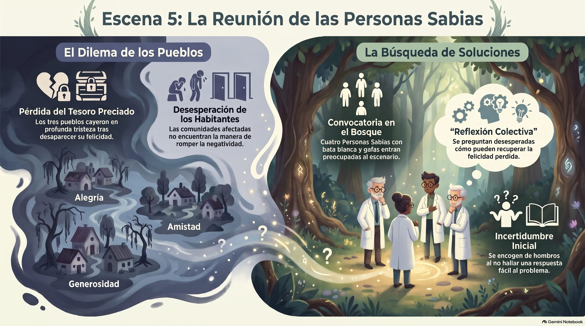
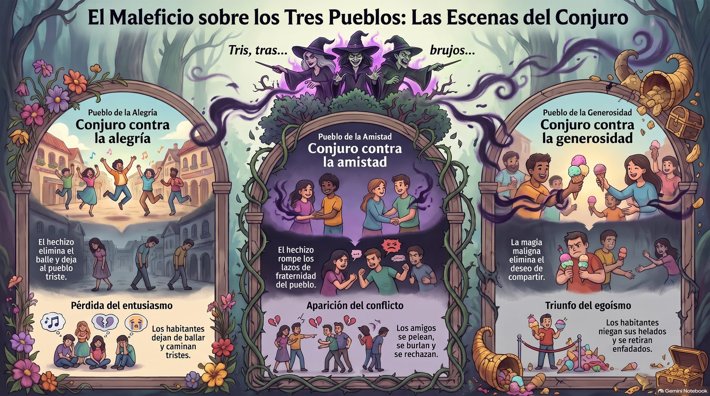
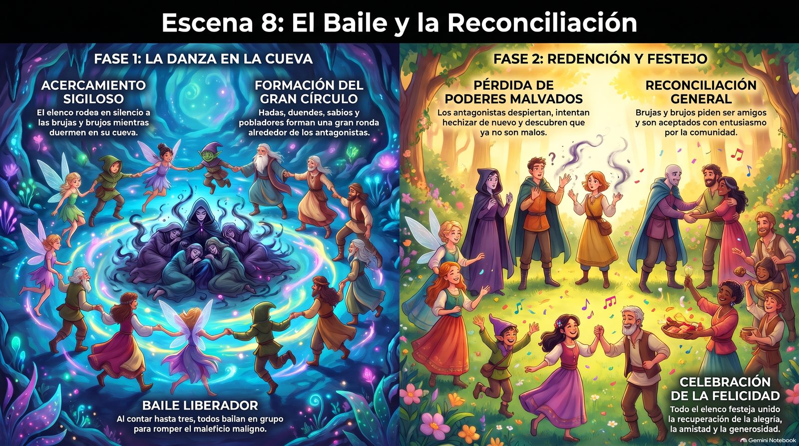
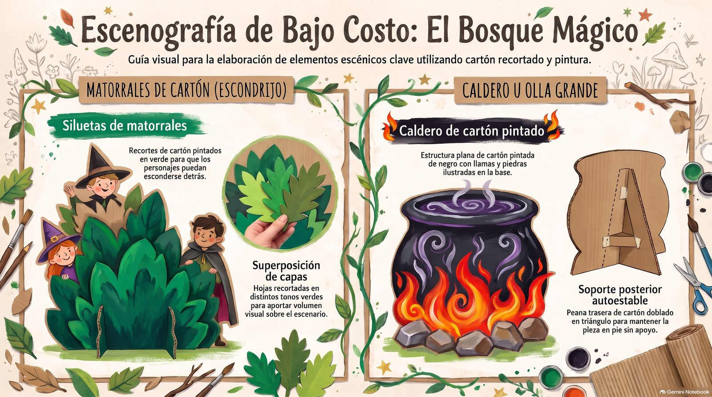
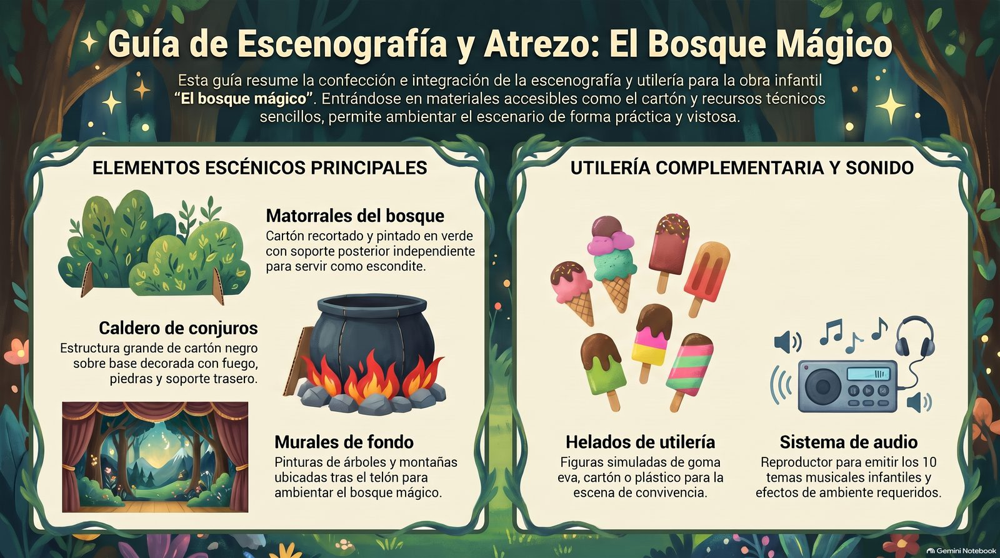

El autor y sus condiciones
El bosque mágico es una obra de Vicente Cañón Verdasco (© 2019), autor teatral de Tarragona, España. Sus obras para niños y jóvenes están en www.obrasteatro.com.
En octubre de 2026, el autor autorizó a Lumi a publicar el guion interactivo, a traducirlo al inglés y a ampliar el número de habitantes, hadas y duendes para que participe toda la escuela, siempre respetando el texto original.
El autor cede la obra gratis para representarla, con estas condiciones, que se aceptan al usarla:
- Su nombre, Vicente Cañón, debe figurar siempre como autor: antes de cada función y en todo lo que se publique: carteles, programas, redes sociales, páginas web y videos.
- No se puede cambiar el título de la obra: El bosque mágico. En inglés se presenta como El bosque mágico (The Magical Forest).
- El autor agradece mucho que le envíen fotos, enlaces a videos, recortes de prensa o críticas de cada montaje, a su correo: tente.ca2017@gmail.com. Le gustaría recibir también un cartel donde aparezcan el título, su nombre, la escuela y el país.
Lista para cumplir con el autor
- El cartel y el programa dicen «El bosque mágico, de Vicente Cañón». Use el cartel de Lumi.
- Los presentadores dicen el nombre del autor antes de empezar (ver trabajos para no actores).
- Cada publicación en redes, en la página de la escuela o en video lleva el título y el nombre del autor.
- Las familias firmaron el permiso para las fotos (ver la carta).
- Después de la función, se envían al autor fotos, enlaces a los videos y el cartel.
De un vistazo
- De qué trata: cerca de un bosque mágico viven tres pueblos felices: el de la Alegría, el de la Amistad y el de la Generosidad. Las brujas y los brujos, envidiosos, les lanzan un maleficio y les quitan la felicidad. Las personas sabias no saben qué hacer, hasta que unas hadas y unos duendes traen un plan: de noche, mientras las brujas y los brujos duermen, todos bailarán juntos en círculo a su alrededor. El baile rompe el maleficio, y las brujas y los brujos piden ser amigos de todos.
- Valores: la alegría, la amistad y la generosidad, y sus contrarios: la tristeza, la enemistad y el egoísmo. Que los problemas se resuelven juntos, y que quien se equivoca puede cambiar.
- Duración: de 20 a 25 minutos, según la música y los bailes. El texto es corto: casi todo es movimiento, baile y música.
- Elenco: el autor la escribió para unos 25 niños de 5 y 6 años, y dice que todos los grupos pueden crecer. En Lumi la proponemos para toda la escuela, de prekínder a 6.º, con el reparto por grados.
- Idiomas: el guion está en español y en inglés, con las mismas líneas y el mismo orden: se puede representar en un idioma o en el otro.
La obra en imágenes





Video: guía de la obra
Video en español, de unos 6 minutos: la obra, el reparto por grados, las escenas y el vestuario.
Reparto por grados y cantidades
El autor pensó la obra para unos 25 niños y escribió que casi todos los personajes se pueden doblar: en lugar de cuatro habitantes por pueblo pueden ser cinco, seis o más, y lo mismo con las brujas, los brujos, las hadas y los duendes. Así participa toda la escuela sin cambiar el texto.
- Cuando una línea es de un grupo («Brujas», «Hadas y duendes», «Todos los habitantes»), la dice todo el grupo, en coro.
- Cuando una línea tiene número («Habitante 1», «Personas sabias 3 y 4»), la puede decir un niño o un pequeño grupo.
| Grado | Papel | Original | Recomendado | Máximo | Cómo crece |
|---|---|---|---|---|---|
| 5.º y 6.º | Narradora o narrador | 1 a 4 | 4 | 8 | Una voz por cada dos escenas, o dos voces que se alternan los versos. |
| Equipo técnico (ver trabajos) | — | 8 | 15 | Sonido, luces, telón, matorrales, utilería, apuntador. | |
| Guías de bambalinas | — | 1 por cada 3 pequeños | 1 por cada 2 | Llevan a prekínder y kínder a su lugar y entran con ellos. | |
| 3.º y 4.º | Brujas | 3 | 6 | 12 | Todas dicen sus líneas en coro; se esconden en grupos detrás de los cuatro matorrales. |
| Brujos | 3 | 6 | 12 | Igual que las brujas. Una bruja y un brujo llevan el caldero. | |
| Personas sabias | 4 | 8 | 12 | Dos grupos: «1 y 2» y «3 y 4». Puede haber personas sabias de cada pueblo. | |
| 1.º y 2.º | Hadas | 2 | 10 | 25 | Todas dicen sus líneas en coro y guían el baile final. |
| Duendes | 2 | 10 | 25 | Igual que las hadas: entran por el lado contrario. | |
| Prekínder y kínder | Pueblo de la Alegría (amarillo) | 4 | 10 | 30 | Kínder dice las líneas con número; prekínder, las de todo el pueblo («¡Oh! ¡Oh!»), los bailes y los gestos. |
| Pueblo de la Amistad (azul) | 4 | 10 | 30 | Igual: los habitantes 1 a 4 pueden ser cuatro parejas o cuatro grupitos. | |
| Pueblo de la Generosidad (rojo) | 4 | 10 | 30 | Igual: todos comparten un helado de utilería. | |
| Total | ≈ 26 | ≈ 100 | 200 o más |
Escena por escena
| Escena | Qué pasa | Quién sale | Música |
|---|---|---|---|
| 1 | La narradora presenta los tres pueblos, que saludan al público. Las brujas y los brujos, envidiosos, preparan el conjuro en el caldero. | Narración, los tres pueblos (sentados), brujas y brujos | Pista 1 |
| 2 | El pueblo de la Alegría baila en el bosque; el maleficio lo pone triste. | Narración, Alegría, brujas y brujos | Pistas 2 y 3 |
| 3 | El pueblo de la Amistad juega; el maleficio hace que se peleen y se saquen la lengua. | Narración, Amistad, brujas y brujos | Pistas 4 y 3 |
| 4 | El pueblo de la Generosidad comparte helados; el maleficio los vuelve egoístas. Las brujas y los brujos celebran y vuelven a su cueva. | Narración, Generosidad, brujas y brujos | Pistas 5, 3 y 1 |
| 5 | Las personas sabias se reúnen en el bosque, pero no encuentran solución. | Narración, personas sabias | Pista 6 |
| 6 | Llegan las hadas y los duendes con el plan: bailar de noche alrededor de las brujas y los brujos dormidos. | Narración, personas sabias, hadas y duendes | Pista 7 |
| 7 | Las personas sabias explican el plan a los pueblos. De noche, todos suben en silencio a la cueva. | Narración, personas sabias, los tres pueblos, y después todos | Pista 8 |
| 8 | A la de tres, todos bailan en círculo y rompen el maleficio. Las brujas y los brujos se quedan sin poderes, piden ser amigos y todos celebran. | Todo el elenco | Pistas 9 y 10 |
Trabajos para no actores
No todos quieren o pueden hablar en escena, y la obra no sale sin estos trabajos. Son papeles de verdad: aparecen en el programa con su nombre.
🎤 Presentadores
5.º o 6.º · 1 o 2 niñosDan la bienvenida y anuncian la obra y a su autor: «Les presentamos El bosque mágico, de Vicente Cañón». El autor pide que su nombre se diga antes de cada función.
🔊 Sonido
4.º a 6.º · 2 niñosPonen cada pista en el momento justo, siguiendo la hoja de entradas.
💡 Luces
5.º y 6.º · 1 o 2 niñosLuz de día para las escenas 1 a 6 y luz de noche, azul, para la cueva.
🌳 Telón y matorrales
5.º y 6.º · 2 a 4 niñosAbren y cierran el telón y revisan que los cuatro matorrales estén firmes.
🧺 Utilería
4.º a 6.º · 2 niñosPreparan el caldero y los helados en una mesa, entre bastidores, y los recogen después.
📖 Apuntador
5.º o 6.º · 1 o 2 niñosSiguen el guion entre bastidores y, si alguien olvida su línea, se la susurran.
🤝 Guías de bambalinas
5.º · 1 por cada 2 o 3 pequeñosLlevan a prekínder y kínder a su lugar, los acompañan en el baile final y los traen de vuelta.
🎨 Escenografía
Cualquier gradoPintan los matorrales, el caldero y el fondo de árboles y montañas.
👒 Vestuario
4.º a 6.º, con un adultoAyudan a vestir a los pequeños: alas, coronas de flores, gorros y sombreros.
📰 Cartel y programa
3.º a 6.º · 2 a 4 niñosPreparan el cartel y el programa, con el título, el autor y los nombres de todo el elenco.
🎟️ Recepción
4.º a 6.º · 2 a 4 niñosReciben a las familias, reparten programas y ayudan a encontrar asiento.
📸 Fotografía y video
6.º, con un adultoGraban solo a los niños cuyas familias dieron permiso. Esas fotos y videos son los que se envían al autor.
Música y canción final
El autor propone esta lista, que es opcional. Casi todas las piezas son de la Biblioteca de audio de YouTube, de uso libre (música infantil y alegre). El autor ofrece enviarlas en mp3 a quien se lo pida, por correo: ver el autor.
| Pista | Pieza | Carácter | Cuándo suena |
|---|---|---|---|
| 1 | The New Order, Aaron Kenny | Cinematográfico, oscuro | Brujas y brujos (escenas 1 y 4) |
| 2 | Sand Castle, Quincas Moreira | Infantil, positivo | Baile del pueblo de la Alegría |
| 3 | St. Francis, Josh Lippi & The Overtimers | Rock, triste | Salida triste de cada pueblo |
| 4 | Rainbow Forest, Quincas Moreira | Infantil, feliz | Baile del pueblo de la Amistad |
| 5 | Goat, Wayne Jones | Infantil, feliz | Baile de los helados, pueblo de la Generosidad |
| 6 | Sleeping Sheep, The Green Orbs | Infantil, serena | Las personas sabias, preocupadas |
| 7 | Robert Schumann, Escenas infantiles, op. 15, n.º 1, «De países y gentes lejanos» | Piano | Entrada y salida de las hadas y los duendes |
| 8 | Johannes Brahms, Canción de cuna | Nana | La noche: las brujas y los brujos se duermen |
| 9 | Twirly Tops, The Green Orbs | Infantil, feliz | El gran baile en círculo |
| 10 | Dancing on Green Grass, The Green Orbs | Infantil, positiva | Final y reverencia |
Canción final: «A bailar en el bosque»
Una canción de Lumi para cerrar la obra, compuesta a partir de sus ideas: la alegría, la amistad, la generosidad, el helado compartido y el hechizo roto. No forma parte del texto del autor; Vicente Cañón la conoce y le pareció «una genial idea para darle un colofón final a la obra». Va después de la última narración, con todo el elenco en corro. Cada verso se canta dos veces, para que los más pequeños lo repitan.
Letra
En el bosque de la magia,
todos juntos a bailar.
La tristeza se marchó,
¡la alegría ya llegó!
Compartimos el helado,
damos saltos de ilusión;
si jugamos como amigos,
se ilumina el corazón.
En el bosque de la magia,
hadas, duendes y los sabios
el hechizo rompen ya;
brujas y brujos sonrientes
¡cantan con nosotros hoy!
¿Quién comparte su bondad?
¡Generosidad!
¿Quién nos une de verdad?
¡La amistad!
¿Y qué canta el bosque entero?
¡Felicidad!
¡Uno, dos y tres: a sonreír!
Hoja de entradas (sonido y luces)
Para el equipo técnico. Cada «entrada» es un cambio: se hace cuando ocurre lo que dice la columna «Señal». Las luces son una sugerencia de Lumi; la obra se puede hacer con la luz del salón.
| N.º | Escena | Señal | Sonido | Luces |
|---|---|---|---|---|
| 1 | 1 | Se abre el telón | Silencio | Luz de día, cálida |
| 2 | 1 | Las brujas y los brujos van al frente del escenario | Pista 1; baja cuando hablan | — |
| 3 | 1 | «Ja, ja, ja...», después de «¡Sí!» | Pista 1 mientras traen el caldero | — |
| 4 | 1 | «Vamos a esparcirlo… ¡ya!» | Pista 1 mientras sacan el caldero y hacen el trenecito | — |
| 5 | 2 | Termina la narración | Pista 2: baile de la Alegría; se apaga cuando terminan | — |
| 6 | 2 | «¡Oh! ¡Oh!» | Pista 3: salida triste | — |
| 7 | 3 | Las brujas y los brujos se esconden | Pista 4: baile de la Amistad | — |
| 8 | 3 | Los habitantes 3 y 4 sacan la lengua | Pista 3: salida triste | — |
| 9 | 4 | Las brujas y los brujos se esconden por última vez | Pista 5: baile de los helados | — |
| 10 | 4 | Todos los habitantes sacan la lengua | Pista 3: salida triste | — |
| 11 | 4 | «¡Hemos acabado con la felicidad!» · «¡Ja, ja, ja!» | Pista 1: salen por la derecha | — |
| 12 | 5 | Termina la narración | Pista 6: las personas sabias caminan preocupadas | — |
| 13 | 6 | Termina la narración («…impacientes») | Pista 7: entran las hadas y los duendes | — |
| 14 | 6 | «¡Así lo haremos!» | Pista 7: salen las hadas y los duendes | — |
| 15 | 7 | La narración dice «Aquella noche…» | Silencio | Baja a luz de noche, azul suave |
| 16 | 7 | Termina la narración | Pista 8: la nana, mientras todos entran de puntillas | Noche |
| 17 | 8 | «A la una, a las dos y a las… ¡tres!» | Pista 9: el gran baile en círculo | Noche, con luz en el centro |
| 18 | 8 | «¡Claro que sí!» | — | Vuelve la luz de día |
| 19 | 8 | «…esta obra de teatro se ha acabado» | Pista 10: baile final y reverencia | Luz general |
| 20 | Final | Termina la reverencia; todos en corro | Canción «A bailar en el bosque»: todos cantan y bailan | Luz general; al final, se cierra el telón |
Vestuario
El vestuario es el que propone el autor. Casi todo se arma con ropa de casa; lo demás se hace en clase.
| Papel | Ropa de casa | Lo hace la escuela |
|---|---|---|
| Pueblo de la Alegría | Pantalón de mezclilla y camiseta amarilla. | — |
| Pueblo de la Amistad | Pantalón de mezclilla y camiseta azul. | — |
| Pueblo de la Generosidad | Pantalón de mezclilla y camiseta roja. | Helados de utilería. |
| Hadas | Medias de color y camiseta. | Falda de tul, alas y corona de flores. |
| Duendes | Camiseta y medias o pantalón verdes. | Gorro verde; orejas de duende, si se quiere. |
| Brujas | Vestido o ropa negra. | Sombrero negro puntiagudo de cartulina. |
| Brujos | Ropa oscura. | Capa negra y sombrero negro. |
| Personas sabias | Ropa clara. | Bata blanca (una camisa grande de adulto sirve) y gafas redondas sin cristales. |
| Narradores | Ropa escolar arreglada. | — |
| Equipo técnico | Ropa negra u oscura, para no llamar la atención. | — |
Lista de cotejo de vestuario y utilería
Para el docente de cada grupo: marque cada casilla cuando el niño tenga todo listo. Se imprime una por salón.
Salón: Docente: Papel del grupo:
| Nombre | Ropa de casa | Pieza hecha en clase (alas, gorro, sombrero…) | Marcado con su nombre | Listo para el ensayo general |
|---|---|---|---|---|
Utilería
- Cuatro matorrales de cartón, firmes y con su soporte
- Caldero u olla grande de cartón
- Helados de utilería para el pueblo de la Generosidad
- Fondo pintado con árboles y montañas
- Las diez pistas ordenadas y probadas en el equipo de sonido
- Cinta de colores en el suelo: amarilla, azul y roja para los pueblos
Escenografía y utilería
- Fondo: montañas y árboles pintados en papel o cartón, separados del telón.
- Cuatro matorrales de cartón recortado, pintados en varios tonos de verde, con un soporte trasero de cartón doblado en triángulo para que se sostengan solos. Detrás se esconden las brujas y los brujos, así que deben ser altos y anchos.
- Caldero u olla grande de cartón pintado de negro, con fuego y piedras pintadas en la base, también con soporte trasero. Una bruja y un brujo lo entran y lo sacan.
- Helados de utilería de goma eva, cartón o plástico, para el pueblo de la Generosidad.
- La cueva (escenas 7 y 8): no hace falta decorado. Basta con la luz de noche y con que las brujas y los brujos se acuesten en el centro.
Al final de su obra, el autor incluye fotos de los matorrales y del caldero que se hicieron en el montaje original, todos de cartón. Las infografías de la obra en imágenes muestran cómo hacerlos.
Plano del escenario
Visto desde el público. «Fondo» es lo más lejano al público; «Frente», lo más cercano. Los tres pueblos se sientan en el suelo, delante del escenario y de cara al público, y suben al escenario cuando les toca.
Escenas 1 a 4
Público
Escenas 5 y 6
Público
Escenas 7 y 8
Público
Ensayos
Semanas 1 a 3: cada grupo en su salón
- Prekínder y kínder: sesiones de 15 minutos. Saludar al público cuando la narración nombra a su pueblo, el baile de su pueblo y los gestos del maleficio: cara triste, sacar la lengua, no querer compartir.
- 1.º y 2.º: la entrada con música, las frases en coro («Hemos venido a ayudaros», «A la de tres, empezaremos a bailar») y el baile en corro.
- 3.º y 4.º: las brujas y los brujos, la mímica del caldero, el conjuro y el «trenecito»; las personas sabias, la caminata preocupada y su diálogo.
- 5.º y 6.º: los versos de la narración, con calma y voz clara, y el equipo técnico con la hoja de entradas.
- Todos: la canción final, «A bailar en el bosque», en corro.
Semanas 4 y 5: por bloques
- Bloque A, el maleficio (escenas 1 a 4): brujas y brujos con un pueblo cada vez.
- Bloque B, la solución (escenas 5 y 6): personas sabias con hadas y duendes.
- Bloque C, la noche y el baile (escenas 7 y 8): todos los grupos, con los guías de bambalinas.
- Narración: se une a cada bloque para ajustar los tiempos con la música.
Última semana: ensayos generales
- Marcar con cinta de colores en el suelo dónde se sienta cada pueblo; entradas y salidas con música.
- Obra completa con vestuario, matorrales, caldero y helados, y la reverencia final.
En clase
El autor recomienda que, antes de empezar los ensayos, se trabajen en clase los valores de la obra y sus contrarios: alegría y tristeza, amistad y enemistad, generosidad y egoísmo.
Prekínder y kínder
Caras y gestos. Mostrar con la cara y el cuerpo «alegre» y «triste», «amigos» y «enfadados», «compartir» y «no compartir». Es justo lo que harán en escena.
Repartir algo entre todos, como unos helados de papel, y hablar de cómo se siente compartir.
1.º y 2.º
¿Cómo ayudamos? Las hadas y los duendes no pelean: proponen un plan. ¿Qué podemos hacer cuando un compañero está triste o enfadado?
Ensayar el corro y contar «a la una, a las dos y a las tres» todos a la vez.
3.º y 4.º
Envidia y segunda oportunidad. ¿Por qué las brujas y los brujos sienten envidia? Al final piden ser amigos y los aceptan: ¿por qué es importante perdonar?
Las personas sabias no encuentran la respuesta solas: ¿cuándo es bueno pedir ayuda?
5.º y 6.º
Verso y rima. Buscar las rimas de la narración («alegría» y «día», «amistad» y «solidaridad») y leerlas marcando el ritmo.
Comparar el español con la traducción al inglés: ¿cómo se tradujo «colorín, colorado»?
Carta a las familias
Lista para imprimir. Complete los espacios a mano. Al final hay un talón para devolver firmado.
Obra de teatro de la escuela: El bosque mágico, de Vicente Cañón
Fecha:
Estimada familia:
Este año, toda la escuela, de prekínder a 6.º grado, presentará El bosque mágico, una obra de teatro infantil de Vicente Cañón. Cuenta la historia de tres pueblos, el de la Alegría, el de la Amistad y el de la Generosidad, que pierden su felicidad por un maleficio y la recuperan bailando todos juntos. Mientras ensayan, los niños hablarán en clase de la alegría, la amistad y la generosidad.
Su hijo o hija será:
Ropa que le pedimos, si la tiene en casa (no hace falta comprar nada):
La escuela hará en clase las alas, las coronas de flores, los gorros, los sombreros y las capas. Si no tiene alguna prenda, avísenos: tendremos ropa de préstamo.
Fechas importantes
- Entregar la ropa, en una bolsa con el nombre y el grado:
- Ensayo general:
- Función: día , hora , lugar
Cómo puede ayudar en casa: si su hijo o hija tiene líneas, ensáyenlas juntos. El guion está en Lumi (www.lumi-educa.com), en español y en inglés, con un botón para escuchar cada línea y otro para ver solo las de su personaje.
Sobre las fotos y los videos: el autor de la obra pide que le enviemos fotos y videos de las funciones. Solo enviaremos imágenes de los niños cuyas familias lo autoricen en el talón.
¡Gracias por acompañarnos!
Atentamente,
Devuelva este talón firmado antes del
Nombre del niño o la niña: Grado:
Doy permiso para que mi hijo o hija participe en la obra.
Doy permiso para que la escuela publique fotos o videos de la obra en los que aparezca mi hijo o hija, y para que se los envíe al autor de la obra.
No doy permiso para publicar ni enviar fotos o videos en los que aparezca mi hijo o hija.
Puedo ayudar con: vestuario escenografía el día de la función
Firma: Teléfono: